Sa kap fèt?
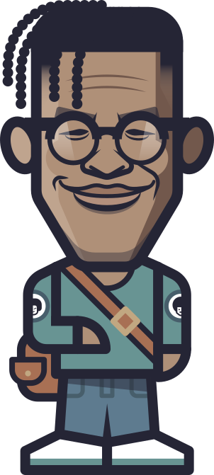
Avant, je me présentais en un mot: avocat.
Aujourd’hui, j’explore les relations qui façonnent notre monde à travers l’écriture, la parole et de multiples expériences.
À propos
J’ai grandi entre mes origines haïtiennes et mon Québec natal. Entre les courts de basketball à ciel ouvert et les collèges privés. Entre les familles bourgeoises et celles qui peinent à joindre les deux bouts. Très tôt, j’ai dû naviguer entre différents univers, sans chemin tracé.
Ce parcours a marqué mon travail. J’essaie de faire dialoguer des milieux, des disciplines, des savoirs et des langages en apparence séparés. J’apprends autant en collaborant avec des institutions qu’en jouant avec mon fils, en discutant avec des élèves ou en lisant.
Le même souci m’anime : rester sensible à la complexité des relations, du monde et du vivant.
Livres et docus
Cette section rassemble des ouvrages collectifs auxquels j’ai contribué au fil des années. Ils témoignent d’un travail d’écriture et de réflexion mené avec d’autres voix autour de sujets sociaux, culturels et politiques qui traversent le Québec contemporain.
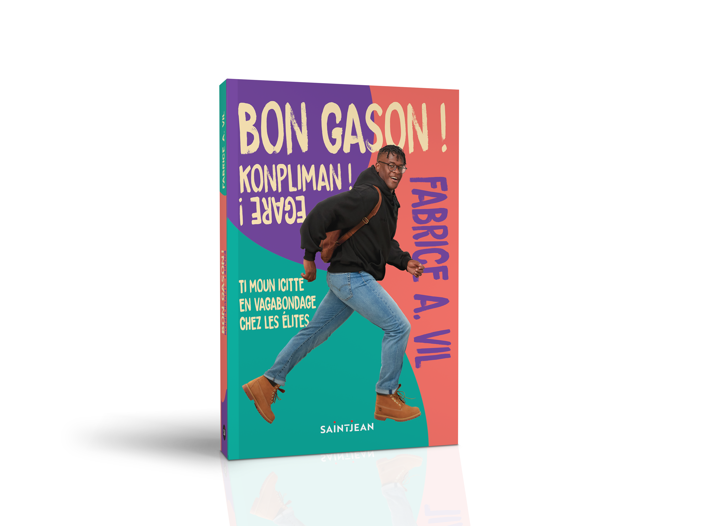
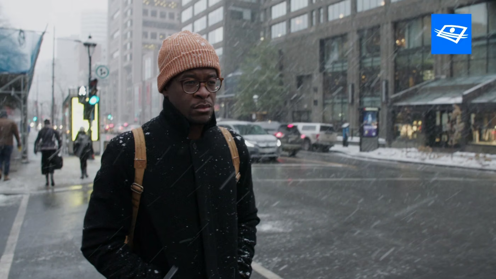
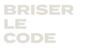
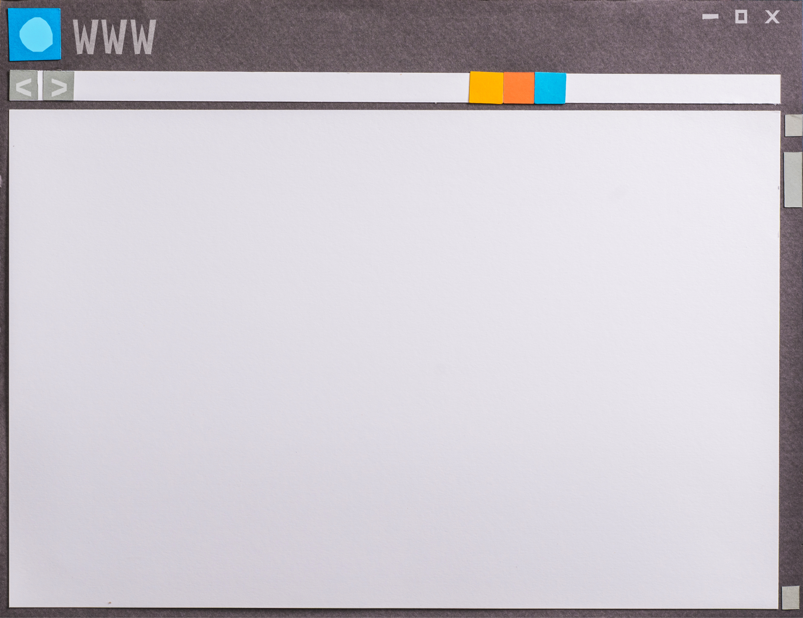
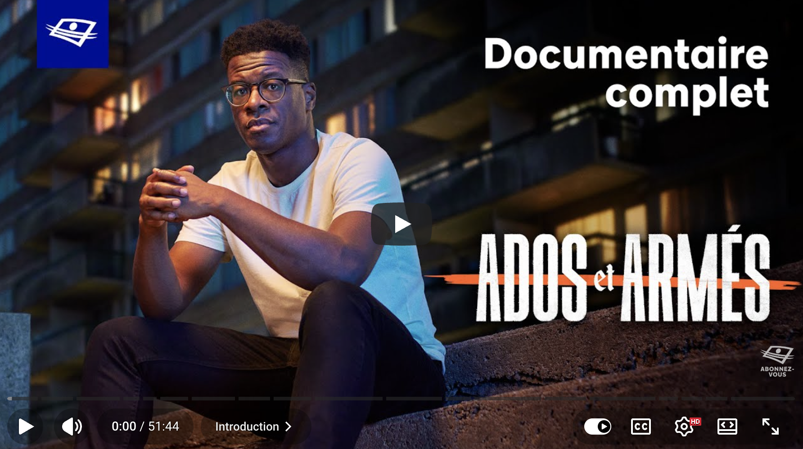
Réflexions
Au quotidien, j’écris pour plonger dans des sujets qui me tiennent à coeur, réfléchir, faire évoluer mes idées et les partager. Ces jours-ci, vous pouvez me lire sur Substack.
Sak Pase? est un podcast où je me pose des questions en compagnie d’invité.e.s de tous horizons.
À l’émission Pénélope, je partage des réflexions philosophiques inspirées de situations ordinaires.
Pendant huit ans, j’ai collaboré avec La Presse. J’ai commencé au Devoir.
Expériences
Je fais mes classes un peu partout, des gymnases aux tribunaux.
À l’Espace Dezòd, je participe à la création d’un lieu où l’on peut chiller ensemble, au croisement des études noires et de l’éducation populaire.
Avec Pour 3 Points, j’ai consacré près de quinze ans à soutenir la réussite éducative de jeunes. Cette aventure a été une véritable école en leadership collectif, en relations humaines et en innovation sociale.
Comme avocat, j’ai travaillé sur de nombreux dossiers de droit public et constitutionnel. Cette expérience continue d’enrichir ma compréhension des rouages de notre société.
J’ai tenu mon premier sifflet de coach à 16 ans. Depuis, le coaching et la pédagogie façonnent ma manière d’aborder les relations et le monde.
Quelques organisations avec lesquelles j’ai collaboré…
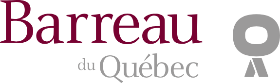
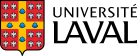
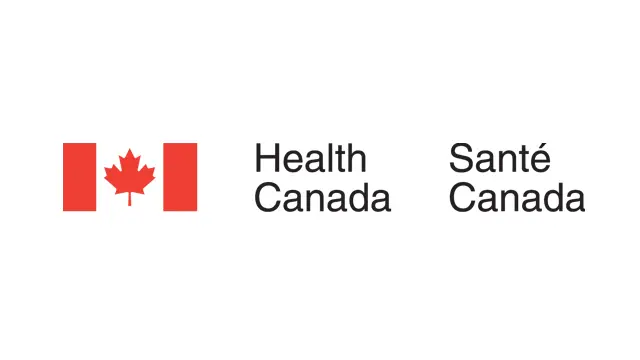
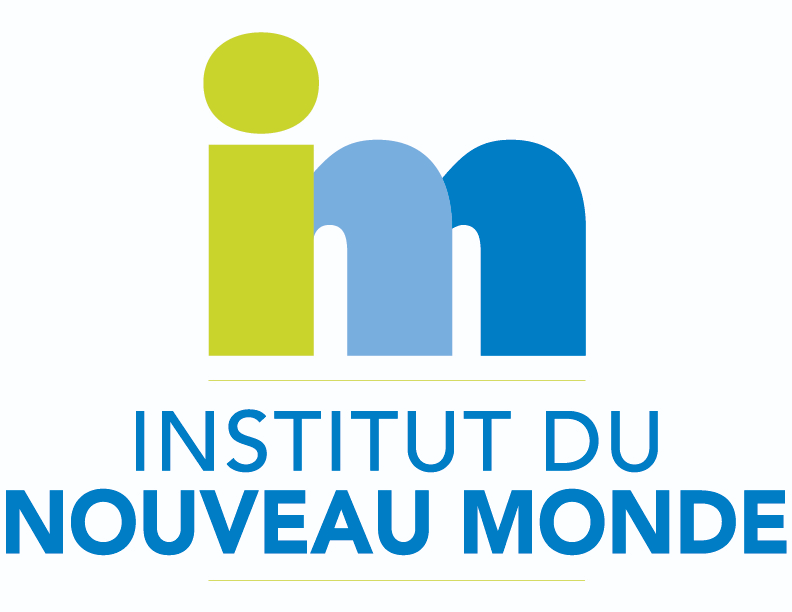
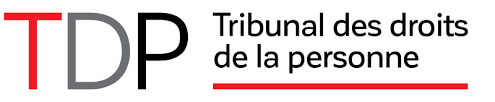
Shoutouts
Ici, je partage quelques-uns de mes coups de cœur, par simple enthousiasme. Ces personnes et initiatives, parfois méconnues, m'inspirent ou me font réfléchir.


Contact
Dans un auditorium, une salle de classe ou un café, les échanges m’enrichissent toujours.
Pour une conférence, une entrevue, un atelier ou toute autre demande professionnelle, vous pouvez communiquer avec mon agente, Stéphanie Moffatt, à
Pour échanger des idées, vous pouvez m’écrire à info@fabricevil.com ou me retrouver sur Substack et les réseaux sociaux.